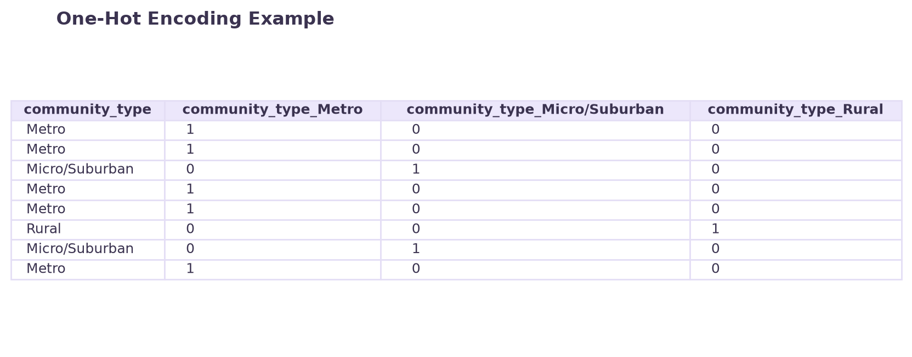
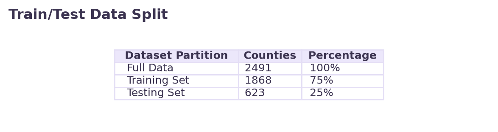
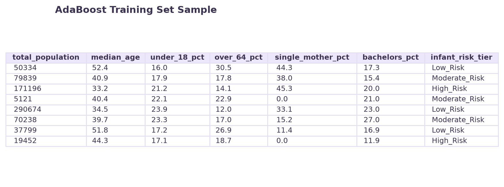
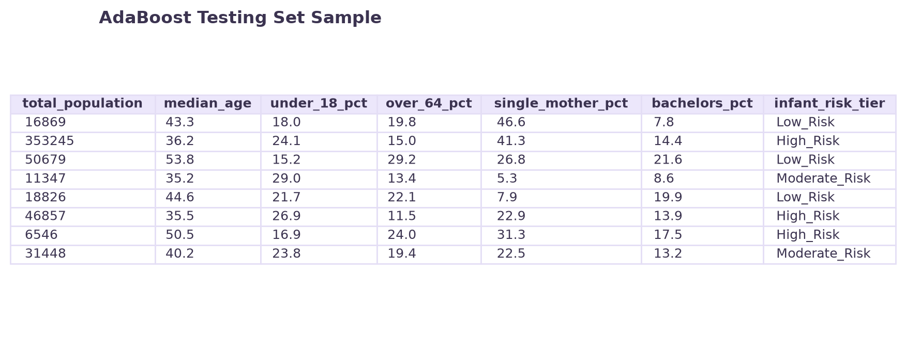

Overview
Explain what AdaBoost (adaptive boosting) is: how it works, and what you plan to do with it for this topic. Add two images.
Data Prep
Prepared dataset: clean_labeled_infant_risk.csv, clean_labeled_community_type.csv. Raw data: raw_data folder.
Explain what data format this method needs, and show a small image of the prepared data used here.


Save as
images/ada_encoded_sample.png.

Save as
images/ada_data_split.png.

Save as
images/ada_train_sample.png.

Save as
images/ada_test_sample.png.Code
Link the code and note the language and core packages used. Do not paste the code itself.
Results
Discuss, illustrate, describe, and visualize the results, the parameters used, and what the results mean for the topic.

Save as
images/reg_pred_vs_actual.png.
Save as
images/reg_confusion_matrix.png.Conclusions
Explain what was learned that applies to the topic.